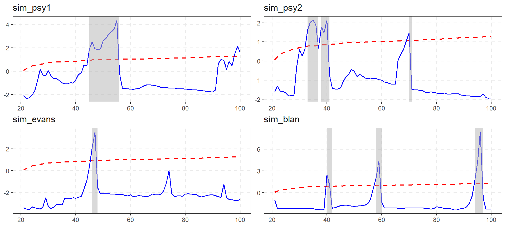
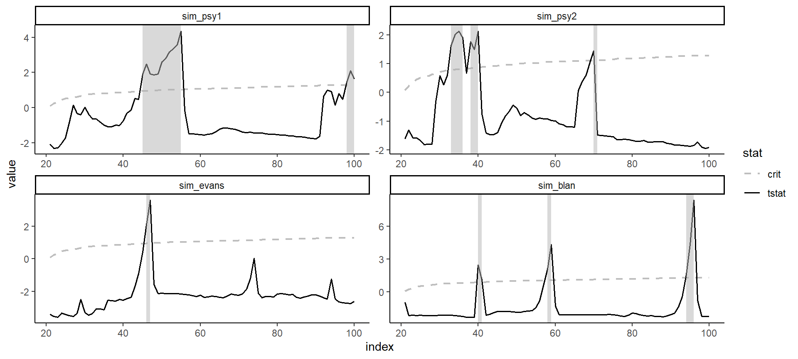
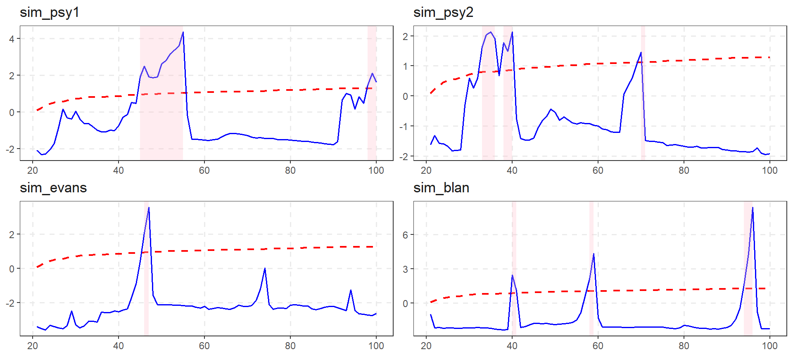
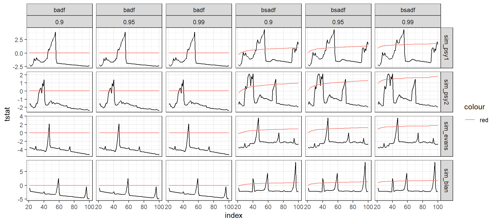
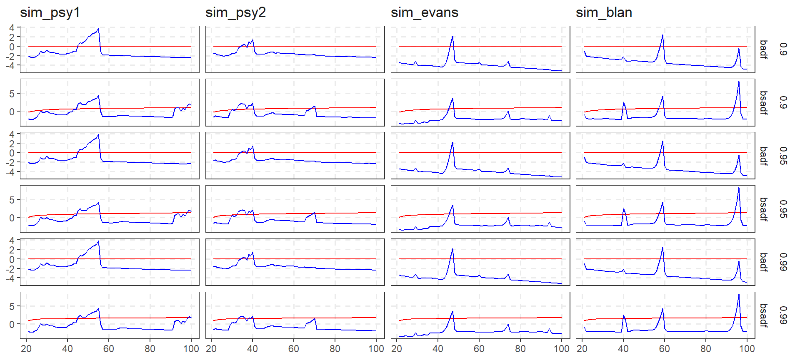
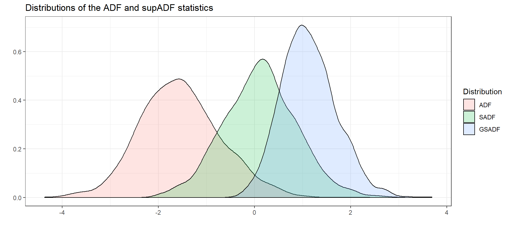
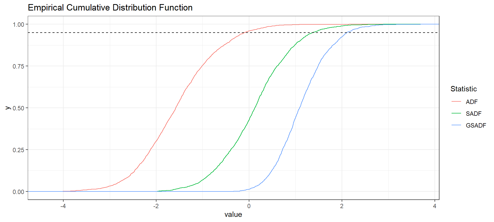
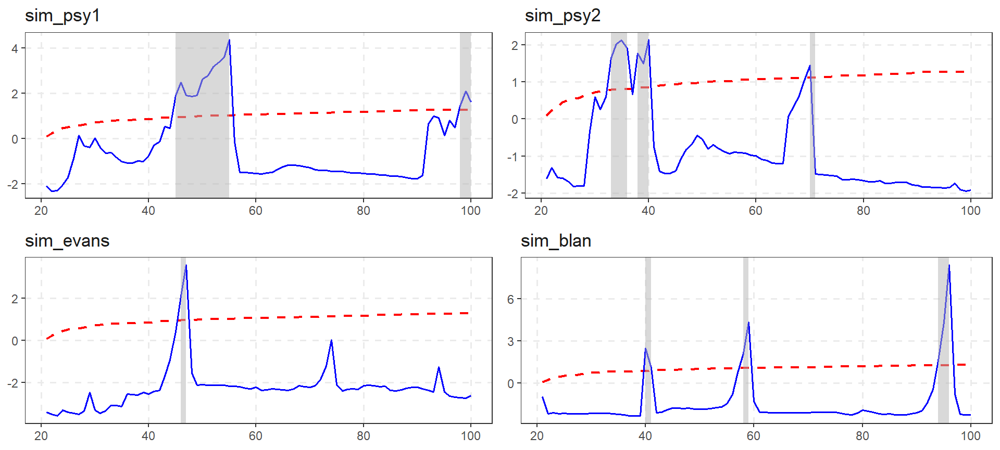

The new design offers full flexibility and customization to produce publication-ready plots. exuber used to plot graph individually in a list, and then you could modify each plot and arrange them into a single grob with ggarrange()(which now is defunct). However, newer versions of exuber focus on providing a faceted plot as it easier to change the aesthetics and themes.
Let’s start by simulating some data.
The visual output of autoplot in v0.4.0 is exactly the same as before.
autoplot(estimation, crit_values) #> Warning: Removed 1 rows containing missing values (geom_rect).
 However, almost all aspects of the plot can be easily changed.
The custom color for autoplot are “blue and”red", however the user can easily override this option with ggplot2::scale_color_manual.
autoplot(estimation, crit_values) + scale_color_manual(values = c("grey","black")) + theme_classic() #> Warning: Removed 1 rows containing missing values (geom_rect).

shade_opt allows the user to manipulate the geom_rect() layer of the ggplot, using the shade function. Alternatively, it can be omitted if it set to NULL.
autoplot(estimation, crit_values, shade_opt = shade(fill = "pink", opacity = 0.3)) #> Warning: Removed 1 rows containing missing values (geom_rect).

Custom plotting is also very easy with the augment_join(), that merge the output of the estimation and and critical values in a ggplot2-friendly way.
joined <- augment_join(estimation, crit_values) joined #> # A tibble: 1,920 x 7 #> key index id name tstat sig crit #> <int> <dbl> <fct> <fct> <dbl> <fct> <dbl> #> 1 21 21 sim_psy1 badf -2.08 90 -0.44 #> 2 22 22 sim_psy1 badf -2.31 90 -0.44 #> 3 23 23 sim_psy1 badf -2.39 90 -0.44 #> 4 24 24 sim_psy1 badf -2.26 90 -0.44 #> 5 25 25 sim_psy1 badf -2.08 90 -0.44 #> 6 26 26 sim_psy1 badf -1.79 90 -0.44 #> 7 27 27 sim_psy1 badf -1.00 90 -0.44 #> 8 28 28 sim_psy1 badf -1.34 90 -0.44 #> 9 29 29 sim_psy1 badf -1.28 90 -0.44 #> 10 30 30 sim_psy1 badf -0.800 90 -0.44 #> # ... with 1,910 more rows
The output of augment_join returns data in tidy format and offers full flexibility to the user. After this point plotting becomes extremely trivial.
joined %>% ggplot(aes(x = index)) + geom_line(aes(y = tstat)) + geom_line(aes(y = crit)) + facet_grid(sig + name ~ id , scales = "free_y")

We also offer two functions scale_exuber_manual and theme_exuber that offer some extra functionality.
joined %>% pivot_longer(cols = c("tstat", "crit"), names_to = "nms") %>% ggplot(aes(x = index, y = value, col = nms)) + geom_line() + facet_grid(sig + name ~ id , scales = "free_y") + scale_exuber_manual() + theme_exuber()

In addition to critical values, we can also calculate the empirical distribution by utilizing the family of *_distr functions. For example if we can simulate the distribution of the supADF tests with Monte Carlo method.
distr <- radf_mc_distr(n = 300) autoplot(distr)

This part is made just for fun.
library(tidyr) distr %>% tidy() %>% rename_all(~ stringr::str_to_upper(.)) %>% gather(Statistic, value, factor_key = TRUE) %>% ggplot(aes(value, color = Statistic)) + stat_ecdf() + ggtitle("Empirical Cumulative Distribution") + geom_hline(yintercept = 0.95, linetype = "dashed") + theme_bw()

To return to the old functionality there are several ways.
library(gridExtra) # To choose only positive series (i.e. statistically significant for 5%) positive_series <- diagnostics(estimation, crit_values)$positive # Through a loop on positive series plot_list1 <- list() for (as in positive_series) { plot_list1[[as]] <- autoplot(estimation, crit_values, select_series = as) } # Alternatively with lapply plot_list2 <- lapply(positive_series, function(x) autoplot(estimation, crit_values, select_series = x)) names(plot_list2) <- positive_series do.call(gridExtra::grid.arrange, plot_list1) #> Warning: Removed 1 rows containing missing values (geom_rect).

With the old functionality you had to make changes one at a time
plot_list1[[1]] <- plot_list1[[1]] + theme_classic()
and then reconstruct the plot with grid.arrange or some other function that arranges all plots into a single grob.
Enjoy Plotting with exuber !!!